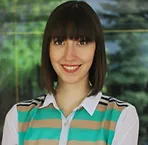

Елена В. Николовска

Дипломиран професор по италијански јазик книжевност на Универзитетот „Св. Кирил и Методиј“, Филолошки факултет „Блаже Конески“, во Скопје, Македонија. Mагистерски студии на Институтот за комуникациски студии. Професор по италијански јазик во Меѓународни училишта НОВА и во Институт за италијански јазик Данте Алигиери-Скопје.
Мери Поп Ѓорчева

Дипломиран професор и преведувач по англиски јазик и книжевност на Универзитетот „Св. Кирил и Методиј“, Филолошки факултет „Блаже Конески“, во Скопје, Македонија.Наставник по англиски јазик во Меѓународни училишта НОВА.
Мила Јовановска
Дипломиран професор по француски јазик и книжевност на Универзитетот „Св. Кирил и Методиј“, Филолошки факултет „Блаже Конески“, во Скопје, Македонија. Mагистерски студии на Институтот за комуникациски студии. Овластен судски преведувач од македонски на франуцски јазик и обратно.
Фросина С. Мијатовиќ

Дипломиран професор по македонска книжевност и јужнословенски книжевности и шпански јазик и книжевност на Универзитетот „Св. Кирил и Методиј“, Филолошки факултет „Блаже Конески“, во Скопје, Македонија.
Сузана Недевска

Дипломиран професор по кинески јазик и книжевност на Универзитетот „Св. Кирил и Методиј“, Филолошки факултет „Блаже Конески“, во Скопје, Македонија и основач на првото приватно училиште за кинески јазик "НИ ХАО 你好" , Скопје.
Орнела Милевиќ

Дипломиран професор германски јазик и книжевност на Универзитетот "Св. Кирил и Методиј", Филолошки факултет "Блаже Конески", во Скопје. Магистерски студии на Универзитетот "Св. Кирил и Методиј", Филолошки факултет "Блаже Конески", во Скопје, отсек: теорија на книжевност, германска книжевност. Наставник по Германски јазик во ООУ" Гоце Делчев-Центар, Скопје.
Драгана Евтимова

Дипломиран професор по македонска книжевност и јужнословенски книжевности и словенечки јазик на Универзитетот „Св. Кирил и Методиј“, Филолошки факултет „Блаже Конески“, во Скопје, Македонија. Дипломиран преведувач за словенечки јазик и литература на Универзитетот во Љубљана, Филозофски факултет. Mагистерски студии на Институтот за литература во Скопје, магистер по културологија.
Дарко Петровски

Дипломиран филолог по општа и компаративна книжевност Универзитетот „Св. Кирил и Методиј“, Филолошки факултет „Блаже Конески“, во Скопје, Македонија. Професор по македонски јазик во меѓунардони училишта НОВА.
Анила Глигоровска

Професор по албански јазик и книжевност во Меѓународни училишта НОВА и преведувач од македонски, албански и англиски јазик во национална телевизија АЛСАТ-М.